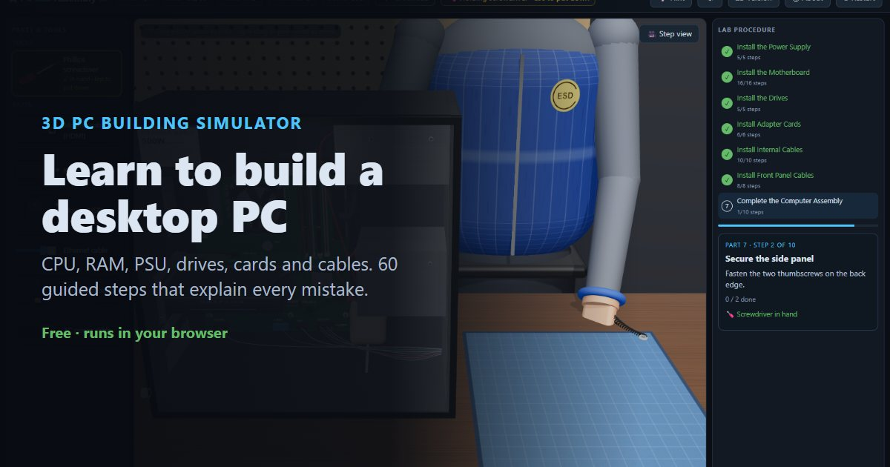

How to build a PC, step by step
This guide walks through a complete desktop PC build in the order a typical computer lab uses: power supply, motherboard and CPU, drives, expansion cards, internal cables, front-panel connectors and the first power-on. Every step matches the free 3D PC building simulator, where you can practise the whole build in your browser and get told exactly why each mistake matters.
▶ Practise this in the free 3D PC building simulator
What you need
- Phillips #2 screwdriver
- Antistatic wrist strap and mat (an ESD vest or smock is a bonus)
- ATX case, power supply and motherboard
- CPU, CPU cooler and thermal compound (if the cooler doesn't have it pre-applied)
- RAM modules
- Hard disk drive and optical drive (or the drives you're using)
- Expansion cards such as a video card and network cards
- SATA data cables, monitor, keyboard, mouse and network cable
Contents
Part 1: Install the Power Supply
Remove the side panel screws
Unplug the computer. With a Phillips screwdriver, remove the two screws on the back edge of the case that hold the side panel.
Remove the side panel
Slide the side panel toward the back of the case and lift it off. Lay a glass panel flat somewhere it can't be knocked over.
Install the power supply
Place the power supply in the PSU bay at the top rear of the case, lining its screw holes up with the holes in the case.
Secure the power supply
Fasten the PSU to the back of the case with its four screws.
Set the voltage selection switch
If the PSU has a voltage selection switch, set it to match your mains supply: 115 V in places such as the United States and Japan, 230 V in places such as the UK, Europe and Singapore.
Many modern PSUs are auto-ranging and have no switch. If yours has one, it must match your local mains voltage.
Part 2: Install the Motherboard
Lay out the parts on the antistatic mat
Lay the motherboard on an antistatic mat or on its antistatic bag. The CPU, cooler and RAM are easiest to fit before the board goes into the case.
Put on the ESD vest
Put on an ESD vest or smock. It keeps static from your clothing away from the components.
An ESD smock or vest is standard practice in electronics labs, but it isn't one of the numbered lab steps.
Put on the antistatic wrist strap
Clip the antistatic wrist strap to a ground point, such as the GND snap on the mat, and put the band on your wrist. Ground yourself before you touch the CPU or RAM.
Open the CPU socket
Press the load lever beside the CPU socket down and out from under its retention tab, then lift it to raise the load plate.
These are general steps for an LGA socket. Your CPU and motherboard may differ, so always follow the manufacturer's instructions.
Install the CPU (align Pin 1)
Find Pin 1: the gold triangle on one corner of the CPU must sit over the matching triangle on the socket. Lower the CPU straight down. Don't slide it or press on it.
The CPU can be damaged if it is installed incorrectly. Never force it.
Close the load plate
Lower the load plate and lock the lever back under its retention tab.
Apply thermal compound
Apply a small, pea-sized amount of thermal compound to the centre of the CPU.
Only needed if the heat sink doesn't already have compound applied.
Place the heat sink / fan
Line the cooler's four push-pins up with the holes around the socket and set it onto the CPU.
Lock the cooler push-pins
Press down each of the four push-pins to lock the cooler, working diagonally.
Plug in the CPU fan
Plug the cooler's fan cable into the correct fan header. Read the labels printed on the board.
Install the RAM
Line the notch on the RAM module up with the key in the slot, then press the module straight down until the latches at both ends close.
Install the second RAM module
Install the additional module the same way. Tip: matching-colour slots run in dual-channel mode.
Install the motherboard standoffs
Screw a brass standoff into the motherboard tray wherever there is a matching hole in the motherboard. Standoffs stop the board shorting against the case.
Install the I/O connector plate
Press the I/O shield into the rectangular opening at the back of the case, from the inside, until it clicks into place.
Place the motherboard in the case
Lower the motherboard into the case. Its rear ports slide into the I/O shield and its holes line up with the standoffs.
Secure the motherboard
Fasten the motherboard to each standoff.
Part 3: Install the Drives
Install the hard disk drive
Slide the hard drive into a 3.5" drive bay until its screw holes line up.
Secure the hard disk drive
Fasten the drive to the cage with the drive screws.
Remove the 5.25" bay cover
Remove the blanking cover from a 5.25" bay at the front of the case.
Install the optical drive
Insert the optical drive from the front until its face is flush with the case and the screw holes line up.
Secure the optical drive
Fasten the optical drive with the drive screws.
Part 4: Install Adapter Cards
Install the wired NIC
Remove the slot cover on the back of the case for the slot you'll use, then press the wired NIC firmly into a PCIe x1 slot.
Secure the wired NIC
Screw the card's mounting bracket to the case.
Install the wireless NIC
Remove another slot cover, then press the wireless NIC firmly into a free PCIe x1 slot.
Secure the wireless NIC
Screw the card's mounting bracket to the case.
Install the video adapter card
Remove the slot cover, then press the video card into a PCIe x16 slot until the slot's latch clicks. Keep the x16 slots for the video card.
Secure the video adapter card
Screw the card's mounting bracket to the case.
Part 5: Install Internal Cables
Connect the 24-pin motherboard power
Align the main power connector with the 24-pin socket and press until the clip clicks.
Connect the auxiliary (CPU) power
Plug the 4/8-pin auxiliary power connector into ATX_12V near the CPU until it clicks.
Connect power to a drive
Plug a SATA power connector from the PSU into the hard disk drive. Power is the wider of the drive's two ports.
Connect power to the other drive
Plug another SATA power connector into the optical drive.
Connect the video card power
Plug the PCIe power connector into the socket on the top edge of the video card.
Only needed if your video card has a PCIe power connector.
Plug in SATA data cable at the motherboard
Align the SATA data cable with a free SATA port on the motherboard and push it in. SATA cables are keyed (L-shaped) so they only fit one way.
Connect SATA cable to a drive
Plug the other end of the data cable into a drive's narrow, L-shaped data port.
Plug in SATA data cable #2 at the motherboard
Align the SATA data cable with a free SATA port on the motherboard and push it in. SATA cables are keyed (L-shaped) so they only fit one way.
Connect SATA cable #2 to a drive
Plug the other end of the data cable into a drive's narrow, L-shaped data port.
Verify the connections
Check that every connector is fully seated: 24-pin, CPU power, drive power and data, video card power and the CPU fan.
The fan power step was done in Part 2 when the cooler went on.
Part 6: Install Front Panel Cables
Connect the reset switch
Press the RESET SW lead onto the RST pins of the F_PANEL header.
Connect the power switch
Press the POWER SW lead onto the PWR pins.
Connect the power LED
Press the POWER LED lead onto the PLED pins. Mind the + / − polarity.
Connect the HDD LED
Press the HDD LED lead onto the HDD pins. Mind the + / − polarity.
Connect the speaker
Press the speaker lead onto the SPK header.
Connect the front USB
Plug the front USB connector into F_USB. The missing pin keys it.
Connect the front audio
Plug the HD Audio connector into F_AUDIO.
Verify the front-panel connections
Check every lead is fully seated on the correct pins.
If an LED or switch doesn't work at first power-on, remove that connector, turn it around and reconnect it.
Part 7: Complete the Computer Assembly
Attach the side panel
Put the side panel back on the case.
Secure the side panel
Fasten the two thumbscrews on the back edge.
Attach the monitor cable
Plug the monitor cable into the video port and tighten its connector.
Attach the keyboard
Plug the keyboard cable into a free USB (or PS/2) port.
Attach the mouse
Plug the mouse cable into a free USB (or PS/2) port.
Attach the Ethernet cable
Plug the network cable into an Ethernet port, such as the one on the NIC you installed.
Attach the wireless antenna
Screw the antennas onto the wireless NIC's connectors.
Attach the power cable
Plug the AC power cable into the power socket on the power supply.
Switch on the power supply
Flip the PSU rocker switch on the back to I (on).
Power on & verify
Press the power button on the front of the case and watch the POST.
Common mistakes to avoid
- Touching the CPU or RAM before grounding yourself
- A static discharge you can't even feel can damage a chip. Put the wrist strap on first.
- Ignoring Pin 1 on the CPU
- If the gold triangles don't line up, the CPU won't drop in. Forcing it bends the socket pins, which usually ruins the motherboard.
- Fitting the cooler without thermal compound
- Without compound, tiny air gaps stop heat moving from the CPU to the heat sink, and the CPU overheats and throttles or shuts down.
- Plugging the CPU fan into SYS_FAN
- Many boards refuse to boot, or can't control the fan, unless the cooler is on the header labelled CPU_FAN.
- Putting RAM in backwards or in the wrong slots
- The notch must match the key, so a reversed module simply won't seat. Use matching-colour slots so the two modules run in dual-channel mode.
- Skipping the standoffs
- Without standoffs, the solder points on the back of the board touch the metal case and short out.
- Putting the video card in an x1 slot or leaving the slot cover on
- A video card needs a full-length PCIe x16 slot, and the slot cover must come off first so the card's bracket can sit in its place.
- Mixing up SATA power and data, or the 24-pin and 8-pin power
- Power is the wider SATA port. The 24-pin connector goes in the long socket on the board's edge; the 8-pin goes in ATX_12V near the CPU.
- Reversing the LED polarity on the front-panel header
- LED leads have a + and a − pin. Backwards, the LED stays dark (no harm done; turn it around).
- Plugging the monitor into the motherboard when a video card is installed
- With a video card fitted, the onboard video port is usually disabled. Use the port on the card.
- Setting the PSU to the wrong voltage
- A PSU set to 115 V on 230 V mains can be destroyed; set to 230 V on 115 V mains it may not start. Many modern PSUs switch automatically.
Frequently asked questions
What order should you build a PC in?
A reliable order is: power supply, then the CPU, cooler and RAM on the motherboard while it sits on an antistatic mat, then standoffs, I/O shield and the motherboard in the case, then drives, expansion cards, internal power and data cables, front-panel connectors, and finally the side panel and external cables.
Should you install the CPU before putting the motherboard in the case?
Yes, usually. Fitting the CPU, cooler and RAM while the board lies flat on an antistatic mat is easier and puts less stress on the board than doing it inside the case.
How much thermal paste should I use?
A small, pea-sized amount in the centre of the CPU. The cooler's pressure spreads it. Skip this if the cooler already has compound applied.
Do I really need an antistatic wrist strap?
It's strongly recommended. Static discharge can damage a CPU or RAM without any visible spark. If you have no strap, touch bare metal on the case often, but a grounded strap is the safe option.
Can I practise building a PC without real parts?
Yes. The free Device Lab 3D simulator runs in your browser and walks you through all 60 steps, catching mistakes like a misaligned CPU or reversed RAM and explaining why they matter.
Is this useful for CompTIA A+ or IT Essentials?
The procedure follows the kind of PC assembly lab used in IT courses and hardware certifications, so it's good revision before a practical. Always follow your course material and your parts' manuals.
Reading is one thing. Doing it without breaking anything is another.
▶ Practise all 60 steps in 3DNext: How to assemble a laptop, step by step · How to repair a phone · How to repair a tablet